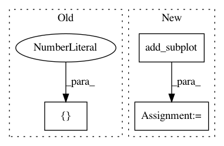

280f4c3af60e94c62c51c9b5d9c95df8843e2e27,lib/matplotlib/tests/test_triangulation.py,,test_triplot_return,#,952
Before Change
def test_triplot_return():
// Check that triplot returns the artists it adds
from matplotlib.figure import Figure
ax = Figure().add_axes([0.1, 0.1, 0.7, 0.7])
triang = mtri.Triangulation(
[0.0, 1.0, 0.0, 1.0], [0.0, 0.0, 1.0, 1.0],
triangles=[[0, 1, 3], [3, 2, 0]])
After Change
def test_triplot_return():
// Check that triplot returns the artists it adds
ax = plt.figure().add_subplot()
triang = mtri.Triangulation(
[0.0, 1.0, 0.0, 1.0], [0.0, 0.0, 1.0, 1.0],
triangles=[[0, 1, 3], [3, 2, 0]])
assert ax.triplot(triang, "b-") is not None, \
In pattern: SUPERPATTERN
Frequency: 3
Non-data size: 3
Instances
Project Name: matplotlib/matplotlib
Commit Name: 280f4c3af60e94c62c51c9b5d9c95df8843e2e27
Time: 2020-02-08
Author: anntzer.lee@gmail.com
File Name: lib/matplotlib/tests/test_triangulation.py
Class Name:
Method Name: test_triplot_return
Project Name: scikit-learn-contrib/imbalanced-learn
Commit Name: 1d62b0c431c821671ef8f251d14cc8ae79b93c76
Time: 2017-03-30
Author: g.lemaitre58@gmail.com
File Name: examples/applications/plot_over_sampling_benchmark_lfw.py
Class Name:
Method Name:
Project Name: matplotlib/matplotlib
Commit Name: fdad18860aadc13b839f1ba2c08d0d7926687c71
Time: 2019-08-08
Author: anntzer.lee@gmail.com
File Name: examples/pie_and_polar_charts/polar_legend.py
Class Name:
Method Name: